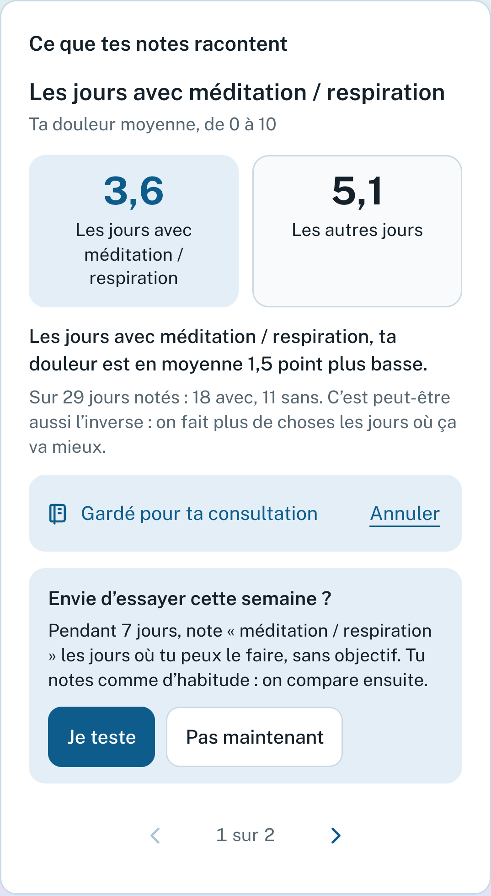
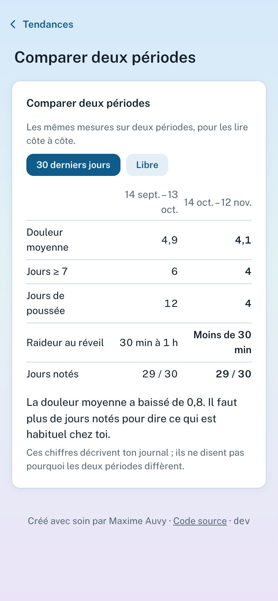

Le carnet de douleur de vos patients, et un rapport que vous lisez en deux minutes.
Présentation pour les professionnels de santé
 maxauvy.github.io/OUCH
maxauvy.github.io/OUCHLe constat
Une question de consultation, une réponse de mémoire. Pour une douleur qui varie d’un jour à l’autre, c’est un résumé fragile.
Le constat
La mémoire d’une journée est plus fidèle que celle d’une semaine
Le rappel d’une seule journée est plus fidèle que celui de la semaine[6]. C’est pourquoi OUCH demande la douleur du jour, notée le jour même et portant sur toute la journée.
Un carnet que l’on peut remplir tous les jours, y compris les pires. Sinon, on perd justement les jours que l’on voudrait pouvoir montrer.
[6] Broderick et coll. 2009 : rappel d’une journée contre une semaine (référence numérotée comme dans la note méthodologique d’OUCH).
Le constat
Les jours où l’on n’en peut plus
Les carnets existants sont souvent fermés, ou pénibles à remplir quand on a mal.
OUCH prend le parti inverse :
- de gros boutons ;
- presque rien à remplir ;
- aucune donnée qui quitte l’appareil sans que la personne l’ait décidé.

OUCH en bref
Un carnet libre et gratuit pour les douleurs chroniques
Pour la fibromyalgie d’abord, et les maladies que la personne déclare : polyarthrite, spondyloarthrite, rhumatisme psoriasique, endométriose, migraine, lombalgie, sclérose en plaques, douleur myofasciale.
OUCH en bref
Trois principes
Seule la douleur, de 0 à 10, suffit pour qu’une journée compte. Les jours les plus durs, l’écran s’allège.
Pas de compte, pas de serveur : le journal reste sur le téléphone. La personne décide de ce qu’elle partage, et avec qui.
Il décrit : moyennes, évolution, jours plus difficiles que d’habitude. Il ne pose pas de diagnostic, ne conseille aucun traitement et ne fait pas passer un rapprochement pour une cause.
OUCH en bref
Ce que fait OUCH, ce qu’il ne fait pas
Ce que fait OUCH
- Décrire : moyennes, médianes, répartition, évolution.
- Repérer les jours nettement au-dessus du niveau habituel de la personne.
- Citer la source de chaque seuil, et dire quand il est extrapolé.
- Aider à préparer ce que l’on veut dire en consultation.
Ce qu’il ne fait pas
- Poser un diagnostic ou conseiller un traitement.
- Remplacer un questionnaire validé ou votre examen.
- Présenter un rapprochement comme une cause.
- Envoyer quoi que ce soit sans geste de la personne.
OUCH n’est ni un dispositif médical ni un avis médical. Les données sont auto-déclarées et non vérifiées.
Les fonctionnalités
Quatre gestes pour la personne, cinq onglets
Chaque jour, en moins d’une minute.
Onglet Aujourd’hui
Courbe, poussées, rapprochements.
Onglets Journal, Tendances
Un plan, des gestes, une respiration.
Onglet Soulager
Rendez-vous, rapport, fiche.
Onglet Consultation
Une règle valable partout : quand la personne va mal, l’application se tait. Les jours de poussée, l’écran se réduit à la douleur et à un mot bienveillant.
Et aussi : français et anglais, mode sombre, verrou par code, installation sur l’écran d’accueil, usage hors connexion.
1 · Noter
Aujourd’hui : une minute suffit


- Douleur de 0 à 10, onze cases à toucher[1][3].
- Zones : 25 sur une silhouette, dont les 19 régions du WPI.
- Mesures : fatigue, sommeil, stress, brouillard, humeur, activité (non validées).
- Traitements : fond, au besoin, soulagement, effets indésirables.
- Ce qui a aidé, météo, cycle, une note : facultatifs.
1 · Noter
Les jours difficiles : l’écran se tait
- Quand une poussée est repérée, ou qu’une période plus difficile est notée par la personne, l’écran se réduit : un mot doux, ce qui a déjà fait du bien, la douleur.
- Ces jours-là, aucune piste, aucun essai, aucun bilan.
- Un jour manqué n’est jamais comblé dans les calculs, jamais un échec.
- Une journée écrite après coup le dit ; le rapport en donne le nombre.
1 · Noter
S’adapter à la maladie, sans rien imposer
Maladies suivies, prénom, traitements, rappel quotidien. Selon les maladies, il range les indicateurs en trois niveaux : recommandés, utiles aussi, tous les autres.
Tout se relance depuis les réglages.
Raideur au réveil, réveils à cause de la douleur, gêne dans les gestes, articulations, règles, mal de tête, jambe, spasmes…
Non validés. Relus rapidement en octobre 2026 par un kinésithérapeute, une psychologue de la douleur et une médecin généraliste : des échelles ou des réponses simples, sans score ni seuil. Ils restent à faire relire par un rhumatologue, un gynécologue et un neurologue.
2 · Comprendre
Tendances : la courbe, les poussées, les changements de traitement


- Courbe 7, 30, 90 jours ou depuis le début, avec calques : poussées, traitements, essais.
- Ce qui s’est passé : frise des poussées, des essais, des changements de dose.
- Zones : où, pendant les poussées, semaine par semaine.
- Jours de la semaine les plus et les moins bons, avec la bande que le hasard suffit à produire.
- Bilan calme du mois qui vient de finir.
2 · Comprendre
Avant et après un changement de traitement

- Les changements de dose apparaissent directement sur la courbe.
- Pour chaque traitement : jours de prise, prises au besoin, soulagement déclaré, effets indésirables datés.
- Un avant-après est comparé à l’écart habituel de la personne, pour ne pas lire un hasard comme un effet.
2 · Comprendre
Qu’est-ce qu’une « poussée » pour OUCH ?
Au moins 3 jours consécutifs à plus de 2 points ou 30 % au-dessus de la médiane des 28 jours précédents, et au moins 4/10.
- Il n’existe pas de définition consensuelle.
- Les 2 points et 30 % viennent d’études sur l’amélioration, appliqués à une aggravation : extrapolation.
- Calibrée sur des données fictives, jamais comparée à des poussées identifiées par des patients ou des soignants.
Au-dessus d’un niveau habituel d’environ 7,7/10, le seuil dépasse 10 : aucune poussée n’est détectable. Cela ne veut pas dire que la personne n’en a pas.
C’est le point où votre regard est le plus utile.
2 · Comprendre
Ce que ses notes racontent : une piste, un essai

- Sommeil, stress, activité de la veille, ce qui a aidé : une piste à la fois, avec les deux moyennes et le nombre de jours.
- La personne la garde pour sa consultation, l’écarte, ou l’essaie pendant une semaine : les jours avec et sans, côte à côte, « c’est peu pour conclure ».
Les comparaisons multiples ne sont pas corrigées : une fausse piste reste possible. L’effet sur la personne (se fixer sur des causes) n’a pas été étudié.
2 · Comprendre
Comparer deux périodes, et le rythme

- Comparer deux périodes : les 30 derniers jours, depuis la dernière consultation, ou deux périodes au choix. Les mêmes mesures côte à côte, l’écart de douleur lu à côté de ce qui est habituel pour la personne.
- Après tes jours actifs : à partir de 30 jours notés avec l’activité, si les lendemains des jours les plus actifs ont été plus difficiles, mis à côté de ce que le hasard donnerait.
3 · Soulager
Soulager : des gestes, sans rien promettre


- Mon plan des jours difficiles : quatre lignes écrites quand ça va mieux, lues en grand quand ça va moins bien.
- Mes gestes : bain ou douche chaude, marche courte… avec un minuteur dont la personne choisit la durée.
- Respirer lentement : 4 s pour inspirer, 6 pour souffler, hors ligne.
- « Bouger, ce que disent les études » : exercice, avec sources.
4 · Transmettre
Consultation : arriver préparé, repartir avec l’essentiel


- Avant : la date, ses questions, ce dont on veut parler en priorité.
- Après : ce que le médecin a dit ; la durée de l’ordonnance, avec un rappel une semaine avant la fin, sans rien calculer à partir des prises.
- Fiche pour un soignant qui ne la connaît pas (urgences, nouveau médecin) : maladies, traitements, effets notés, douleur habituelle, zones, ce qui soulage. Allergies et personnes à joindre : tapées par la personne, jamais devinées.
Le rapport
Médecin traitant : 3 à 5 pages, à lire en deux minutes

Le rapport
Centre douleur : 6 à 10 pages, six parties


- Douleur, jours plus difficiles et leurs 3 jours précédents
- Traitements, antalgiques semaine par semaine
- Symptômes et sommeil
- Habitudes et contexte, jours de la semaine
- Questions et notes du patient
- Méthode et références
Dans les deux versions : maladies déclarées · comparaison à la période d’avant · jours de la semaine avec bande de hasard · avant et après un changement de traitement, sans conclure · pistes et essais du patient · ses questions · méthode. Le rapport décrit, il n’interprète pas.
À quoi cela peut servir
Ce que cela peut changer, pour qui
- Des données plutôt qu’un récit de mémoire.
- Un plan écrit à l’avance pour les jours durs.
- Arriver avec ses questions.
- Garder la main sur ce qu’elle partage.
- Comparaison avec la période précédente, d’un coup d’œil.
- Jours plus difficiles que d’habitude, et leur contexte.
- Traitements, soulagement, effets déclarés.
- Statistiques détaillées, avec méthode et références.
- Antalgiques semaine par semaine, symptômes, sommeil.
- Localisations sur 25 zones.
- Kiné : activité et douleur du lendemain.
- Psychologue, infirmier·e : sommeil, humeur, périodes difficiles.
- Pharmacien : prises, effets, fin d’ordonnance.
- Urgences : la fiche d’une page.
Hypothèses de conception. Son utilité en consultation n’a pas encore été évaluée : nous proposons de l’examiner avec vous.
Confiance
Vie privée : ce qui reste, ce qui sort
- Le journal, dans le navigateur : pas de compte, pas de serveur.
- Il est en clair : un verrou par code facultatif cache l’écran, il ne chiffre rien.
- Les sauvegardes exportées sont chiffrées (AES-256-GCM, mot de passe de la personne : sans lui, elles sont perdues).
- Un export ou le partage de sa météo, uniquement sur un geste de la personne.
- La météo automatique (facultative) : la position à Open-Meteo.
- Un signal anonyme « actif cette semaine », sans donnée de santé, que la personne coupe.
- En accès anticipé, éteinte par défaut : une sauvegarde chiffrée vers un Dropbox.
Logiciel libre (CeCILL v2.1), code public. Plus de 600 tests automatiques. Pas d’audit de sécurité externe à ce jour.
Confiance
Ce qui est validé, et ce qui ne l’est pas
| Élément | État |
|---|---|
| Douleur 0 à 10 | Échelle recommandée (IMMPACT, HAS), reprise telle quelle. |
| Fatigue, sommeil, humeur, brouillard, nouveaux indicateurs | Échelles simples, non validées. |
| Poussées, avant-après, pistes | Règles écrites et testées sur des cas construits ; jamais comparées à des poussées identifiées par des patients ou des soignants. |
| Calculs | Vérifiés par plus de 600 tests automatiques ; jours manquants jamais imputés. |
| Utilité en consultation | Aucun test mené à ce jour auprès de soignants. |
Cadre : OUCH n’est pas un dispositif médical : il décrit ce que la personne note. Deux fonctions s’en approchent, la carte « Bouger » (qui propose une marche courte) et le mot sur les prises oubliées : elles sont parmi celles qu’un expert regarderait d’abord.
Confiance
Limites à garder en tête
- Les données sont auto-déclarées et non vérifiées ; le statut d’une maladie (« diagnostiquée », « suspectée ») est déclaratif.
- Un patient dont la douleur est toujours élevée ne verra jamais de poussée.
- Les rapprochements ne corrigent pas les comparaisons multiples : une fausse piste reste possible.
- L’effet du carnet sur la personne (chercher des causes, s’y fixer, s’angoisser) n’a pas été étudié. C’est pourquoi il n’y a ni série ni score, et un seul réglage pour tout couper.
- Les textes des fonctions les plus récentes (rythme, « Bouger », gestes de la nuque) sont à relire par un professionnel.
Pour la suite
Essayer en deux minutes, et nous aider
Rien de ce qui est saisi ne quitte l’appareil. Aucune donnée de patient identifiable dans un retour.
maxauvy.github.io/OUCHDiscussion
Vos questions, vos retours
- Que voudriez-vous voir en premier sur un rapport ? Qu’y supprimeriez-vous ?
- La définition d’une poussée a-t-elle un sens pour vous ?
- Les pistes et essais d’une semaine : une aide, ou un risque d’orienter vers une cause ?
- Pour quels patients ne proposeriez-vous pas un carnet quotidien ?
- Quelle version de rapport utiliseriez-vous : 3 à 5 pages, 6 à 10 pages, ni l’une ni l’autre ?
Libre, gratuit, et clair sur ses limites.
maxauvy.github.io/OUCH
Plaquette, « Lire un rapport », note méthodologique : dossier « soignants » du projet
maxime@open-freax.fr
sans donnée de patient